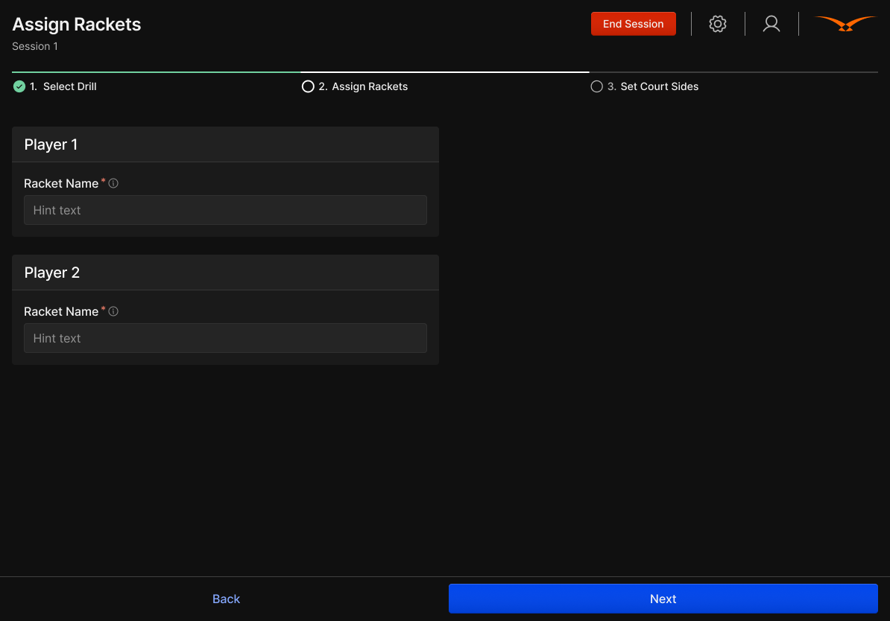
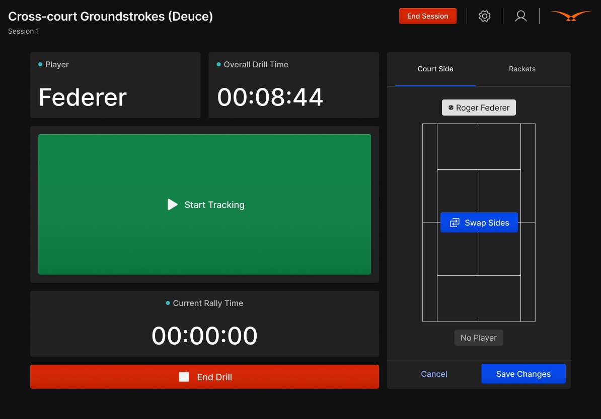
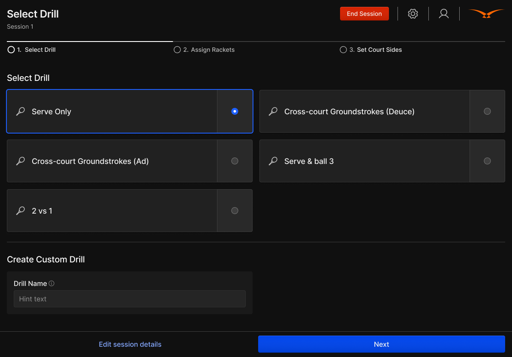
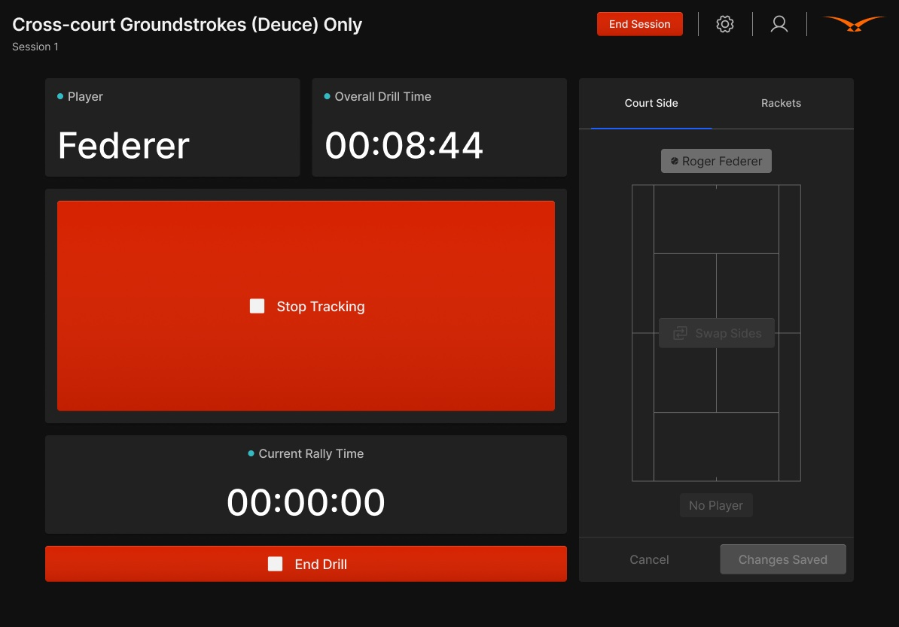

A no-ball review panel, now used in the IPL. Covered in detail below.
BasketballA tool for managing live games and reporting data issues.
TennisA tablet app for coaches and players during training.
My placement year.
Hawk-Eye is a sports technology company. During my placement I designed tools for the operators who run its systems at live events, working closely with product managers, developers and the operators themselves.
I worked on three tools. I've gone into most detail on the cricket no-ball panel, because it shows my whole process, from research to a finished product.
Cricket “No Ball” Review Panel
When a no-ball is reviewed during a live match, an operator has to select the delivery, pick the type of no-ball, choose the batter and confirm the umpire's original decision, all before the replay goes out on TV.
I designed a new panel for this inside Hawk-Eye's existing cricket review system.
Operators have to make four decisions quickly, under pressure, before a no-ball replay can go out.
Talked to operators about what frustrated them, then improved the panel with their feedback.
The panel is now used in the IPL.
Talking to the operators.
I had calls with operators on Google Meet and messaged them regularly. I wanted to find out what they needed from a no-ball review and what annoyed them about the current process.
I then shared each version of the design with them and made changes based on their feedback.
Number the steps
- What I found
- The review always follows the same order, and it's easy to miss a step when you're working fast.
- What I did
- I numbered each step in the panel, so operators can always see what's left to do.
Warn before mistakes
- What I found
- Some information isn't available straight away during a live review.
- What I did
- Warnings show when something is missing, so it can be fixed before the replay goes out.
One decision at a time
- What I found
- Showing every option at once made it harder for operators to focus.
- What I did
- I grouped the options into four stages: the delivery, the no-ball type, the batter and the original decision.
Keep it familiar
- What I found
- Operators already use Hawk-Eye's review software every match.
- What I did
- I made the panel look and work like the rest of the software, so operators could pick it up quickly without extra training.

Now used in the IPL.
The panel was added to Hawk-Eye's cricket review system and is now used in the IPL (Indian Premier League).
Basketball Status API Feed Tool
A tool that lets operators update the status of live basketball games and report data problems as they happen.


Tennis Logging Tool
A tablet app for coaches and players to set up training sessions and track drills, simple enough to use courtside.



